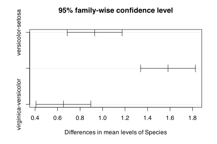
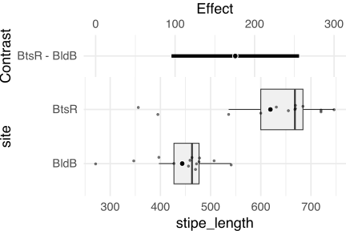

A confidence interval (CI) tells us within what range we may be certain to find the true mean from which any sample has been taken. If we were to repeatedly sample the same population over and over and calculated a mean every time, the 95% CI indicates the range that 95% of those means would fall into.
2 Calculating confidence intervals
Input<-("Student Grade Teacher Score Ratinga Gr_1 Vladimir 80 7b Gr_1 Vladimir 90 10c Gr_1 Vladimir 100 9d Gr_1 Vladimir 70 5e Gr_1 Vladimir 60 4f Gr_1 Vladimir 80 8g Gr_10 Vladimir 70 6h Gr_10 Vladimir 50 5i Gr_10 Vladimir 90 10j Gr_10 Vladimir 70 8k Gr_1 Sadam 80 7l Gr_1 Sadam 90 8m Gr_1 Sadam 90 8n Gr_1 Sadam 80 9o Gr_10 Sadam 60 5p Gr_10 Sadam 80 9q Gr_10 Sadam 70 6r Gr_1 Donald 100 10s Gr_1 Donald 90 10t Gr_1 Donald 80 8u Gr_1 Donald 80 7v Gr_1 Donald 60 7w Gr_10 Donald 60 8x Gr_10 Donald 80 10y Gr_10 Donald 70 7z Gr_10 Donald 70 7")data<-read.table(textConnection(Input), header =TRUE)summary(data)
Student Grade Teacher Score
Length:26 Length:26 Length:26 Min. : 50.00
Class :character Class :character Class :character 1st Qu.: 70.00
Mode :character Mode :character Mode :character Median : 80.00
Mean : 76.92
3rd Qu.: 87.50
Max. :100.00
Rating
Min. : 4.000
1st Qu.: 7.000
Median : 8.000
Mean : 7.615
3rd Qu.: 9.000
Max. :10.000
The package rcompanion has a convenient function for estimating the confidence intervals for our sample data. The function is called groupwiseMean() and it has a few options (methods) for estimating the confidence intervals, e.g. the ‘traditional’ way using the t-distribution, and a bootstrapping procedure.
Let us produce the confidence intervals using the traditional method for the group means:
library(rcompanion)# Ungrouped data are indicated with a 1 on the right side of the formula,# or the group = NULL argument; so, this produces the overall meangroupwiseMean(Score~1, data =data, conf =0.95, digits =3)
.id n Mean Conf.level Trad.lower Trad.upper
1 <NA> 26 76.9 0.95 71.7 82.1
# One-way datagroupwiseMean(Score~Grade, data =data, conf =0.95, digits =3)
Grade n Mean Conf.level Trad.lower Trad.upper
1 Gr_1 15 82 0.95 75.3 88.7
2 Gr_10 11 70 0.95 62.6 77.4
# Two-way datagroupwiseMean(Score~Teacher+Grade, data =data, conf =0.95, digits =3)
Teacher Grade n Mean Conf.level Trad.lower Trad.upper
1 Donald Gr_1 5 82 0.95 63.6 100.0
2 Donald Gr_10 4 70 0.95 57.0 83.0
3 Sadam Gr_1 4 85 0.95 75.8 94.2
4 Sadam Gr_10 3 70 0.95 45.2 94.8
5 Vladimir Gr_1 6 80 0.95 65.2 94.8
6 Vladimir Gr_10 4 70 0.95 44.0 96.0
Now let us do it through bootstrapping:
groupwiseMean(Score~Grade, data =data, conf =0.95, digits =3, R =10000, boot =TRUE, traditional =FALSE, normal =FALSE, basic =FALSE, percentile =FALSE, bca =TRUE)
A very basic figure showing confidence intervals (CI) for a random normal distribution.
3 CI of compared means
AS stated above, we may also use CI to investigate the difference in means between two or more sample sets of data. We have already seen this in the ANOVA Chapter, but we shall look at it again here with our now expanded understanding of the concept.
# First calculate ANOVA of seapl length of different iris speciesiris_aov<-aov(Sepal.Length~Species, data =iris)# Then run a Tukey testiris_Tukey<-TukeyHSD(iris_aov)# Lastly use base R to quickly plot the resultsplot(iris_Tukey)

Results of a post-hoc Tukey test showing the confidence interval for the effect size between each group.
Task 1: Judging from the figure above, which species have significantly different sepal lengths?
4 Harrell plots
The most complete use of CI that we have seen to date is the Harrell plot. This type of figure shows the distributions of each sample set in the data as boxplots in a lower panel. In the panel above those boxplots it then lays out the results of a post-hoc Tukey test. This very cleanly shows both the raw data as well as high level statistical results of the comparisons of those data. Thanks to the magic of the Internet we may create these figures with a single line of code. This does however require that we load several new libraries.
# The easy creation of these figures has quite a few dependencieslibrary(lsmeans)library(Hmisc)library(broom)library(car)library(data.table)library(cowplot)source("../../R/fit_model.R")source("../../R/make_formula_str.R")source("../../R/HarrellPlot.R")# Load dataecklonia<-read.csv("../../data/ecklonia.csv")# Create Harrell PlotHarrellPlot(x ="site", y ="stipe_length", data =ecklonia, short =T)[1]
$gg

Harrell plot showing the distributions of stipe lengths (cm) of the kelp Ecklonia maxima at two different sites in the bottom panel. The top panel shows the confidence interval of the effect of the difference between these two sample sets based on a post-hoc Tukey test.
Task 2: There are a lot of settings for HarrellPlot(), what do some of them do?
The above figure shows that the CI of the difference between stipe lengths (cm) at the two sites does not cross 0. This means that there is a significant difference between these two sample sets. But let’s run a statistical test anyway to check the results.
# A tibble: 2 × 3
site stipe_length_var stipe_length_Norm
<chr> <dbl> <dbl>
1 Batsata Rock 14683. 0.0128
2 Boulders Beach 4970. 0.0589
# We fail both assumptions...# non-parametric testwilcox.test(stipe_length~site, data =ecklonia)
Wilcoxon rank sum test with continuity correction
data: stipe_length by site
W = 146, p-value = 0.001752
alternative hypothesis: true location shift is not equal to 0
The results of our Wilcox rank sum test, unsurprisingly, support the output of HarrelPlot().
---date: "2021-01-01"title: "12. Confidence intervals"subtitle: ""---<!-- # Confidence intervals ---><iframewidth="750"height="422"src="https://ajsmit.github.io/BCB744/Confidence_intervals_slides.html"frameborder="0"allowfullscreen></iframe># IntroductionA confidence interval (CI) tells us within what range we may be certain to find the true mean from which any sample has been taken. If we were to repeatedly sample the same population over and over and calculated a mean every time, the 95% CI indicates the range that 95% of those means would fall into.# Calculating confidence intervals```{r}Input <- ("Student Grade Teacher Score Ratinga Gr_1 Vladimir 80 7b Gr_1 Vladimir 90 10c Gr_1 Vladimir 100 9d Gr_1 Vladimir 70 5e Gr_1 Vladimir 60 4f Gr_1 Vladimir 80 8g Gr_10 Vladimir 70 6h Gr_10 Vladimir 50 5i Gr_10 Vladimir 90 10j Gr_10 Vladimir 70 8k Gr_1 Sadam 80 7l Gr_1 Sadam 90 8m Gr_1 Sadam 90 8n Gr_1 Sadam 80 9o Gr_10 Sadam 60 5p Gr_10 Sadam 80 9q Gr_10 Sadam 70 6r Gr_1 Donald 100 10s Gr_1 Donald 90 10t Gr_1 Donald 80 8u Gr_1 Donald 80 7v Gr_1 Donald 60 7w Gr_10 Donald 60 8x Gr_10 Donald 80 10y Gr_10 Donald 70 7z Gr_10 Donald 70 7")data <-read.table(textConnection(Input), header =TRUE)summary(data)```The package **rcompanion** has a convenient function for estimating the confidence intervals for our sample data. The function is called `groupwiseMean()` and it has a few options (methods) for estimating the confidence intervals, e.g. the 'traditional' way using the *t*-distribution, and a bootstrapping procedure.Let us produce the confidence intervals using the traditional method for the group means:```{r}library(rcompanion)# Ungrouped data are indicated with a 1 on the right side of the formula,# or the group = NULL argument; so, this produces the overall meangroupwiseMean(Score ~1, data = data, conf =0.95, digits =3)# One-way datagroupwiseMean(Score ~ Grade, data = data, conf =0.95, digits =3)# Two-way datagroupwiseMean(Score ~ Teacher + Grade, data = data, conf =0.95, digits =3)```Now let us do it through bootstrapping:```{r}groupwiseMean(Score ~ Grade,data = data,conf =0.95,digits =3,R =10000,boot =TRUE,traditional =FALSE,normal =FALSE,basic =FALSE,percentile =FALSE,bca =TRUE)groupwiseMean(Score ~ Teacher + Grade,data = data,conf =0.95,digits =3,R =10000,boot =TRUE,traditional =FALSE,normal =FALSE,basic =FALSE,percentile =FALSE,bca =TRUE)```These upper and lower limits may then be used easily within a figure.```{r, fig.cap="A very basic figure showing confidence intervals (CI) for a random normal distribution.", message=FALSE, warning=FALSE}# Load librarieslibrary(tidyverse)# Create dummy datar_dat <-data.frame(value =rnorm(n =20, mean =10, sd =2),sample =rep("A", 20))# Create basic plotggplot(data = r_dat, aes(x = sample, y = value)) +geom_errorbar(aes(ymin =mean(value) -sd(value), ymax =mean(value) +sd(value))) +geom_jitter(colour ="firebrick1")```# CI of compared meansAS stated above, we may also use CI to investigate the difference in means between two or more sample sets of data. We have already seen this in the ANOVA Chapter, but we shall look at it again here with our now expanded understanding of the concept.```{r, fig.cap="Results of a post-hoc Tukey test showing the confidence interval for the effect size between each group."}# First calculate ANOVA of seapl length of different iris speciesiris_aov <-aov(Sepal.Length ~ Species, data = iris)# Then run a Tukey testiris_Tukey <-TukeyHSD(iris_aov)# Lastly use base R to quickly plot the resultsplot(iris_Tukey)```> **Task 1:** Judging from the figure above, which species have significantly different sepal lengths?# Harrell plotsThe most complete use of CI that we have seen to date is the Harrell plot. This type of figure shows the distributions of each sample set in the data as boxplots in a lower panel. In the panel above those boxplots it then lays out the results of a post-hoc Tukey test. This very cleanly shows both the raw data as well as high level statistical results of the comparisons of those data. Thanks to the magic of the Internet we may create these figures with a single line of code. This does however require that we load several new libraries.```{r, fig.cap="Harrell plot showing the distributions of stipe lengths (cm) of the kelp _Ecklonia maxima_ at two different sites in the bottom panel. The top panel shows the confidence interval of the effect of the difference between these two sample sets based on a post-hoc Tukey test."}# The easy creation of these figures has quite a few dependencieslibrary(lsmeans)library(Hmisc)library(broom)library(car)library(data.table)library(cowplot)source("../../R/fit_model.R")source("../../R/make_formula_str.R")source("../../R/HarrellPlot.R")# Load dataecklonia <-read.csv("../../data/ecklonia.csv")# Create Harrell PlotHarrellPlot(x ="site", y ="stipe_length", data = ecklonia, short = T)[1]```> **Task 2:** There are a lot of settings for `HarrellPlot()`, what do some of them do?The above figure shows that the CI of the difference between stipe lengths (cm) at the two sites does not cross 0. This means that there is a significant difference between these two sample sets. But let's run a statistical test anyway to check the results.```{r}# assumptionsecklonia %>%group_by(site) %>%summarise(stipe_length_var =var(stipe_length),stipe_length_Norm =as.numeric(shapiro.test(stipe_length)[2]))# We fail both assumptions...# non-parametric testwilcox.test(stipe_length ~ site, data = ecklonia)```The results of our Wilcox rank sum test, unsurprisingly, support the output of `HarrelPlot()`.
![]()